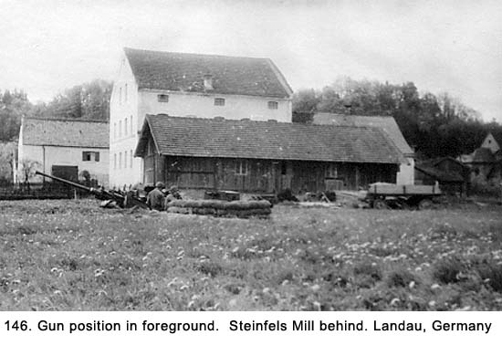
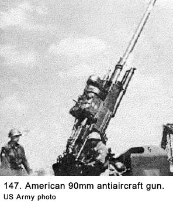
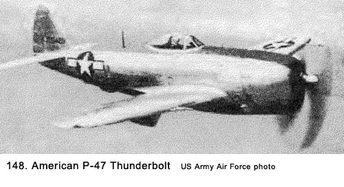
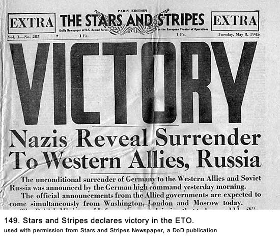
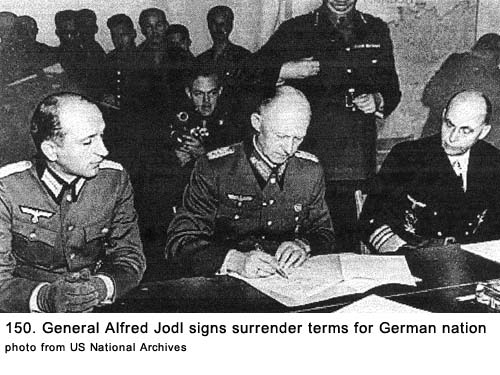
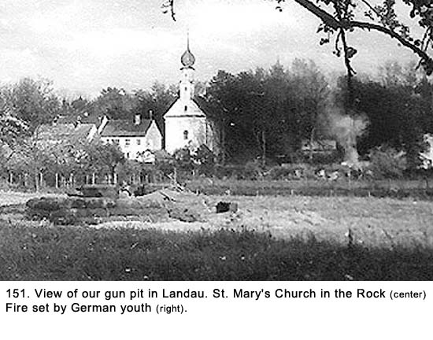

|
Table of Contents < - - - return Chapter 24 < - - - next
World War II Story by Robert F. Gallagher Chapter 23 - Landau on the Isar, Germany The harder the conflict, the more
glorious the triumph. What we obtain too cheap, we esteem too lightly; it is
dearness only that gives everything its value. I love the man that can smile
in trouble, that can gather strength from distress and grow brave by
reflection. 'Tis the business of little minds to shrink; but he whose heart
is firm, and whose conscience approves his conduct, will pursue his
principles unto death. _______________________ We arrived on May 4th. This location was right in the middle of a farm field in the town of Landau. It had been raining again, so everything was a sea of mud. We decided not to set up our tents, because it was a lot of work; with the wet ground, everything would be a mess. This meant we would have to sleep in the truck again. The trouble was, there wasn’t much room in there with all of the junk we had accumulated. On our trip from Regensburg, we had come to a viaduct but we were unable to clear it because of things sticking up above the top of the truck.  We had to stop and rearrange everything and we got a lot of static from the brass for holding up the convoy. At Landau, we threw away a lot of items (mattresses, chairs, a stove, etc.) to make room for all of us to sleep in the truck. There was a sawmill (known to the locals as Steinfels Mill) nearby (See Fig. 146) we hung around in if we did not have daytime duty. It was also our kitchen. We used an old ammunition can to boil water over an open fire to heat our cans of rations and make coffee, just like we had done in Hanau. Early on May 6th, we started to get word over the phone that the war in Europe was nearing its end. We could hardly believe it. Up until then, we had no idea how close the end was. It had been announced to the rest of the world that Hitler had committed suicide in his bunker under the Reich Chancellery in Berlin on April 30th and the city had fallen to the Russians on May 2nd, but we had heard none of this. Our news bulletins were non-existent and if the European war had lasted another six months it would not have surprised us. War Ends in the European Theater Finally, on May 7th, we heard the Germans had surrendered. That is, most of them had surrendered. Those that hadn’t were near us in Bavaria, Germany, and in Czechoslovakia. We were only about forty miles from the border between the two countries. We were told to stay alert and to keep our guns loaded, even if we heard the war in Europe was over.
Just a day before, we were issued a new Army portable radio to be carried in the cab of our truck for use whenever we did not have telephone connections. In addition to broadcasts from our battery headquarters, we found we could pick up the British Broadcasting Corporation (BBC). That station was giving us up-to-date information on the Germans’ surrender. We heard Winston Churchill, the Prime Minister of Great Britain, was going to make a speech, announcing the official end of the European war, to be broadcast over the radio at 1300 hours on Tuesday, May 8th. We looked forward to it with great expectations because of its content and because Churchill was such a dynamic orator. At about 1100 hours on May 8th, I headed into a little forest near our gun position to use the latrine. It consisted of a trench we dug in the ground the width of a shovel, one foot deep, and about four feet long. We called it a straddle trench, and it came complete with a long handled shovel sticking out of the ground to be used to cover deposits and a roll of olive drab colored toilet paper hanging from a tree limb. It was very similar to the bathroom facilities we had used at most of our other gun positions. These woods were very dense, and I had no idea how deep they were. All of a sudden the roar of many planes overhead broke the complete silence. They sounded like they were flying at an extremely low altitude. I looked up through the trees. From what I could see, they all had swastikas or black crosses (German symbols) on them. At about the same time, a 90mm antiaircraft gun battery (See Fig. 147), which sounded like it was right next to me, opened up. They were just beyond the forest, which turned out to be quite shallow, about fifty feet away. The percussion sound from the first shot, which I wasn’t expecting, really gave a jolt to my nervous system. My body quivered. When I collected myself, I went racing back to our gun
position. As I cleared the forest, I looked up and saw an amazing sight. There
were literally hundreds of German planes overhead. There were FW-180s,
ME-109s, JU-87s Stukas (dive bombers), JU-88s, and just about any type of
plane that the Luftwaffe had in their air force. There were even some
two-winged observation planes. The faster planes had their flaps down to
reduce their speed, in order to stay with the slower planes. The armada
completely filled the sky, and they were all flying at what I estimated to be
3,000 to 4,000 feet. My fellow crewmembers of both the 40mm gun and M-51
machine gun mount were blasting away, and there were dozens of other guns in
the area doing the same thing. When I first saw the planes after clearing the
woods, I thought I had also seen an American plane among the German ones.
Looking again, I saw two P-47 Thunderbolts (American fighter planes) (See Fig.
148) pulling up their flaps and maneuvering to get out of the area.  There were planes dropping all over the place. Our gun stopped firing at about the time I arrived at the pit. Thomas, from our crew, had stayed on the phone, and he finally got word from headquarters about what was happening. He had been yelling, “Stop! Stop! Stop!” since I cleared the woods, but those on the gun could not hear him. It turned out this armada was flying from an airfield in Czechoslovakia to another field in Germany so they could surrender to the Americans. The Russians were overrunning their airfield in Czechoslovakia, where these planes had been stationed, and the Germans did not want to be captured by them. The two American P-47 Thunderbolt fighters were escorting them into the Allied territory, but unfortunately, no one had notified the antiaircraft units in our area. We would learn later that many German soldiers were also fleeing west on foot and occasionally in vehicles to avoid being captured by the Russians. There were still dozens of guns throwing up their tracers, including our M-51 machinegun mount. Dillon had to race over to their site and pull the gunner’s hand off the trigger. He had yelled at the two men who were feeding the ammunition to stop the gunner from shooting, but they did not understand his instructions with all the noise and excitement. Also, while they would probably deny it, both crews were so pumped up and deeply indoctrinated in shooting at enemy planes they could not imagine not doing so for any reason. It was the biggest and best selection of targets we had seen to date, and, in fact, there were more German planes that day than we had seen during our entire stay in the ETO. The rest of our battery guns finally stopped but the 90mm guns were still going at it. They were setting their shells to explode at the lowest level possible, but they were still going off far above the low flying planes, leaving their signatory puffs of white smoke in the sky. One of the 90mm shells made a direct hit, and that plane flew into pieces. The heavy guns did not stop firing until what was left of the armada had cleared the sky above us. What happened that day was a real blunder. The Army even had a special name for such incidents. It was called a SNAFU, which stood for “Situation Normal, All Fouled Up.” Every man who ever wore a uniform saw hundreds of SNAFUs during his duty. One of the planes crashed about two-hundred feet from our pit. Bapst, LeClaire and I headed over to the crash scene to investigate. The open-cockpit two-seater observation biplane had made contact with the ground at about a 45-degree angle. When we reached the plane, we found the aviator in the front seat was smashed up against his instrument panel, very obviously dead. The one in the back, a very young high-ranking officer, had climbed out, or maybe he was thrown out of the plane. He was lying on the ground. Before we could reach him, a couple other GIs stripped him of his flight jacket and boots, and then took off. When we got to the officer, he was unconscious but still breathing. We tried to make him comfortable, but there wasn’t much we could do for him. Other than a small wound on his head, we could not see what was wrong with him. I ran back to our gun position, phoned for an ambulance and then returned to the crash site. One (American) showed up in a very short period of time, but the medics insisted on taking the dead airman out of the plane, which took a lot of time. As we stood next to the wounded pilot on the ground, the human factor took over. It was one thing to watch the antiaircraft guns shoot dozens of planes out of the sky just a few minutes before, but watching one person die in front of us was something else. No matter how we tried to look at him as the enemy, he looked an awfully lot like most of the American airmen we had seen. We could see his breathing getting shallower and shallower as time went on and his life ebbed away. I had never seen anyone die up close like that before, and the fact he was the enemy did not make it any less unpleasant. By the time they loaded him into the ambulance and took off for the hospital, his condition was such that the morgue would have been a more appropriate destination. Churchill's Thrilling Victory Speech It was getting near 0100 hours, so we hurried back to our gun pit and gathered around the truck radio to hear Churchill. The speech was magnificent, and we would learn later it would be known as the Ministry of Health Balcony Speech, given before a very jovial and wildly cheering crowd. The first part went as follows:
At the conclusion of the speech, we heard the crowd break out singing Land of Hope and Glory, known as Pomp and Circumstance March in America. Several of our crewmembers were waving their arms as though they were leading the band. Many of us had marched to that song at our high school graduations just a few years prior, and it created a lot of nostalgic feelings for us. We were all elated about the victory. There was no wild cheering at first but we all had a great feeling of relief; it was Victory in Europe Day. We heard lots of small arms firing going off in the distance but no heavy guns in our area were fired. After six long years of fighting, the war in Europe was finally over. We still had wine left over from the Regensburg winery, and Crow filled our mess kit cups from one of the five-gallon cans. The entire crew toasted the big day, and then we moved around and made toasts with individual members. The combination of wine and a great reason to celebrate soon produced joviality not seen before among our crew. Later, when the merriment died down, I thought about the German aviators who had been killed the day the war ended, and I felt sorry for them. Then I realized the Germans had started this war and millions (100 million by one count) of people, including innocent women and children, had been killed, not to mention those who were crippled, wounded, or displaced. I thought about the slave labor camps, oppressive occupation of countries, and all the other horrible consequences of war that had resulted because of their actions. However, these facts did not make me feel any better about the senseless waste of life I had just seen. The shooting down of the German planes on that morning when the war, in effect, was over, took some of the edge off our celebration of VE day for me. Up until that time, we had not even heard about the concentration camps where millions of Jews and others had systematically been put to death. When we got a copy of Stars and Stripes some days later
(See Fig. 149), we learned more details about the surrender. Grand Admiral
Karl Doernitz, who was in command of all German forces following Hitler’s
suicide, had ordered the surrender following an unsuccessful attempt at
negotiations. Colonel General Alfred Jodl signed the surrender papers for the
Germans and Lieutenant General Walter Bedell Smith, Eisenhower’s chief of
staff, signed for the Allies at General Eisenhower headquarters in Reims,
France, on May 7th (See Fig. 150). At the insistence of the Russians, another
signing took place in Berlin a few days later.   The Third Army mopped up the last resistance by the Germans in a couple of days, but we saw no action ourselves. We got the command, March Order by phone, loaded up our trucks, and prepared to join the convoy. Now all we had to worry about was being sent to the Pacific Theater of Operations, where the war with the Japanese was still going strong. As we were pulling away from this gun position, we
noticed some German youths were setting fires in the area (See Fig. 151). They
seemed to have no other motive other than making trouble. They had already
torched one farmer’s barn and were working on another one. We took a picture
of one of the smoldering structures Bapst commented sarcastically as he
observed them, “There are mothers’ little darlings doing what they have been
taught. They’re showing their neighbors what they learned in the Hitler youth
program.”  Up until that time in the war, our destiny had pretty well been defined as we moved from one town to the next in the ETO. The next decision was going to be an important one that would have strong ramifications. We wondered what was going to happen to us now. Chapter 24 < - - - next Table of Contents < - - - return _________________________ Footnotes and Source of Photographs. Copyright, Robert F. Gallagher, 1999 - 2015, all rights reserved on all images and content.
|